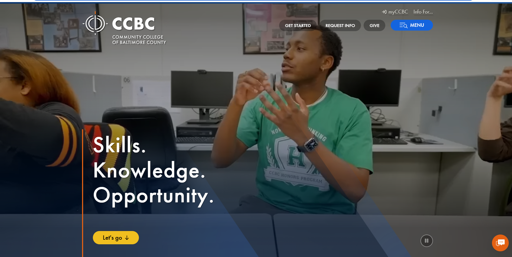

The URL of the website is: https://www.ccbcmd.edu/
The name of the website is: Community College of Baltimore County (CCBC)
The target audience of the website is: Prospective students, current students, faculty, staff, and the general community who are seeking information about the college's academic programs, admissions, events, and resources.
The site is organized into main categories including Admissions, Academics, Campus Life, Services, and News. These sections are accessible from the top navigation bar and further broken down into specific areas like degrees, student services, and events. The homepage also includes direct links to important resources like the student portal and financial aid information.
The website follows the "Repetition" principle of CRAP (Contrast, Repetition, Alignment, Proximity). For example, the color scheme of blue and white is consistently used throughout the site, which helps users quickly recognize the school's brand and navigate the site. The logo appears in the same location on every page, which reinforces this sense of consistency.
The website's accessibility score according to the Accessibility Checker is: 82%. It has some areas for improvement, including missing `alt` text on images and color contrast issues in some text and background combinations.
The website is effective in supporting users in completing tasks accurately. It provides clear navigation and easily accessible forms, but some areas (such as the search feature) could be more intuitive. The site’s academic program pages are detailed, but prospective students might struggle to find specific program information without using the search bar.
Users can perform tasks quickly due to a well-organized structure and quick access to resources like class schedules, financial aid, and admissions. However, the homepage is content-heavy, and new visitors might feel overwhelmed by the number of options available. A simplified, more focused homepage might help users find key information faster.
The website is visually appealing, with high-quality images of campus life and interactive elements like news updates and events calendars. The overall design is appropriate for an academic institution, and the site's layout ensures the information is easy to digest. It’s a professional yet inviting experience for prospective students and the community.
One recommendation for improvement would be to enhance the site's mobile accessibility. Some text and images on smaller screens may be harder to read, especially in low contrast areas. Optimizing the mobile version of the site, particularly in terms of font size and readability, would enhance the overall user experience, especially for students accessing it on-the-go.
Here is a screenshot of the CCBC website you are evaluating:
